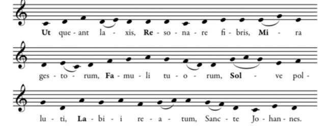
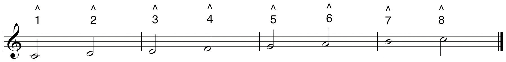

In our system we label pitches using letter names. In other countries pitches are labeled using solfégeSyllables adapted to denote pitches. Originally used as a pedagogical mnemonic. syllables. This tradition originated as a pedagogical device invented by Guido. The syllables, originally Ut, Re, Mi, Fa, Sol, La, come from the initial syllable of each line of Ut queant laxis, an Ambrosian hymn to St. John the Baptist. Each line of music starts on a successively higher pitch. Guido employed this as a pedagogical tool for training singers.
Since Ut is the only syllable in the collection ending on a hard consonance, it was eventually replaced by the syllable Do (from Domine -Latin-“Lord”) to facilitate singing. In the 15th-century a seventh tone and syllable was added, Si, an acronym for Sancte Ioannes, the last two words from Ut queant laxis,. This became the syllable Ti in 19th-century English sol-fa.The inclusion of the syllable Ti is attributed to Sarah Glover. Ti was substituted for Si so that each solfége syllable would begin on a differing consonant. Thus we have solfége labels for pitches.
Figure 2.24 Ut queant laxis: Pitches and Syllables
Originally these syllables were fixed: each syllable referred to one specific pitch. “C” was always Do, regardless of context or chromatic alteration, “D” was always Re and so on. This fixed system is prevalent in those European countries, as well as among musicians trained in that tradition. A modified, moveable system of solfége has become prevalent in American music theory pedagogy. This will come into focus in Chapter 3 "The Foundations Scale-Steps and Scales".
One other notational convention has become commonplace in recent years. A caret is placed above a number, the caret denoting the words “scale degree.” This is adapted from the analytical symbolization of the reductive analysis techniques of the German-Austrian theorist Heinrich Schenker.
Figure 2.25 Scale Degree Numbers
As an Aural Skills drill:
(Sing in a comfortable register for now. Do not pronounce the “L” when singing Sol).